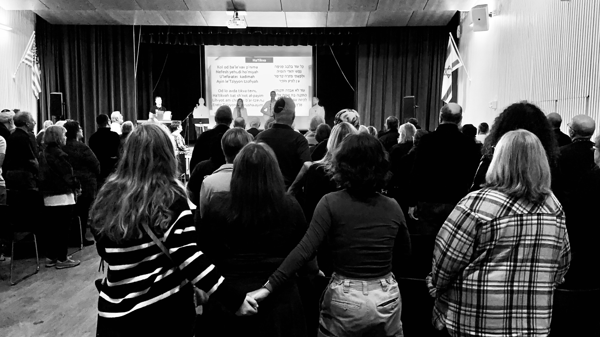
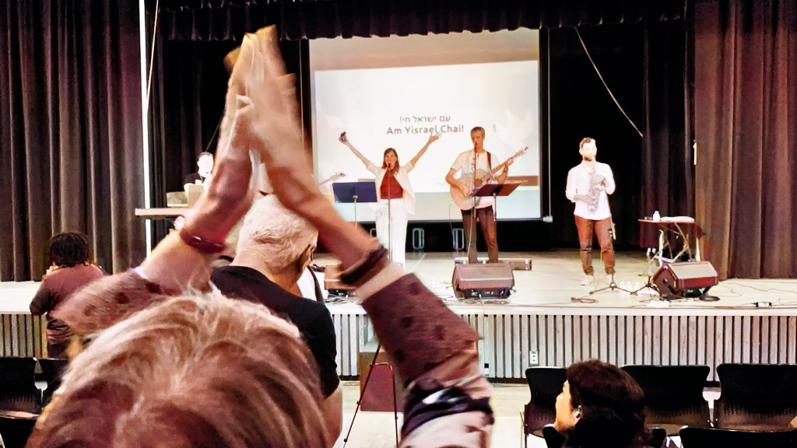
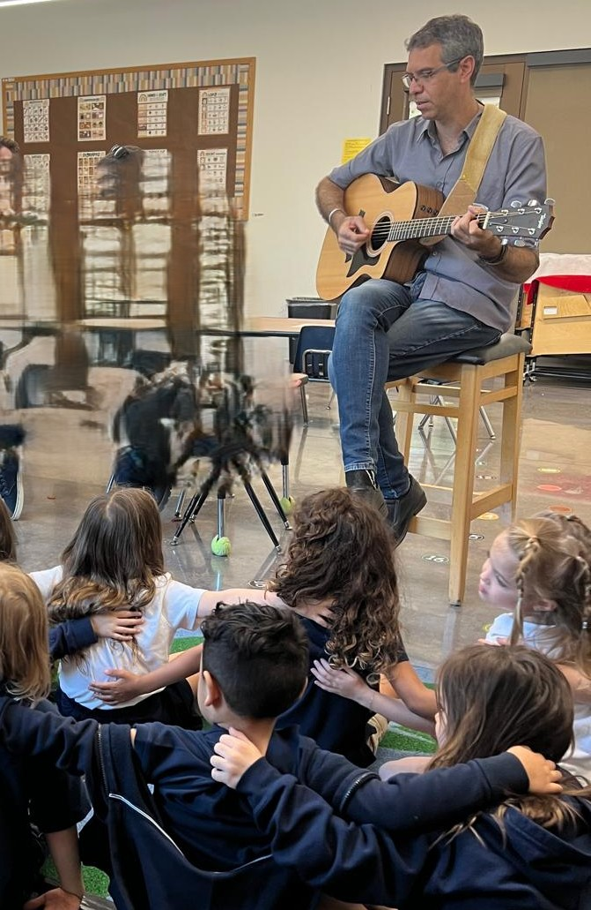
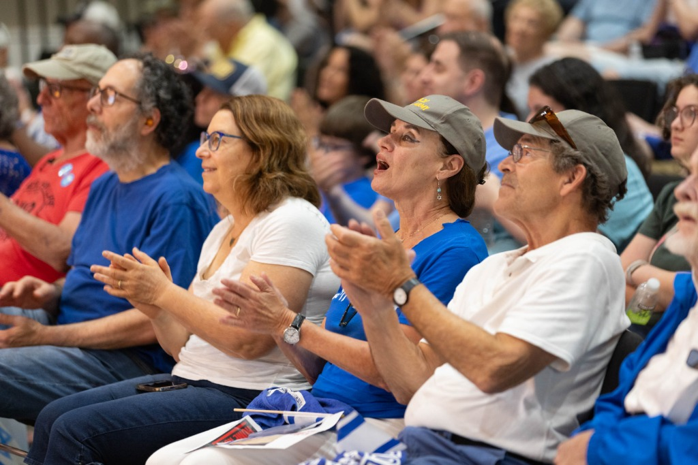

A Gentle Framework for a Difficult Day
A commemorative experience that gives communities a way to gather, remember, sing, listen, and breathe together — without forcing one single emotional response.
A live Israeli musical journey of remembrance, resilience, and hope
Bring your community together to mark October 7 with a moving Israeli musical encounter — beloved Hebrew and English songs, personal stories from Israel, projected lyrics, and guided communal singing led by Hashayara’s musician-educators from the Galilee.
WHY COMMUNITIES CHOOSE HASHAYARA
Jewish communities around the world are looking for a meaningful way to mark October 7 — one that is dignified, gentle, connecting, and emotionally honest. Hashayara offers exactly that: a live Israeli musical encounter that brings people together through beloved Hebrew and English songs, personal stories from Israel, projected lyrics, and guided communal singing. It creates a space where remembrance, grief, resilience, solidarity, and hope can all be held together.
Designed for synagogues, federations, JCCs, schools, campuses, and community-wide commemorations.
“Hashayara gave our community exactly what we needed — space to breathe, sing together, and move from a difficult moment into connection and hope.”

Hear from host communitiesA commemorative experience that gives communities a way to gather, remember, sing, listen, and breathe together — without forcing one single emotional response.
Hashayara’s musicians are also educators from the Galilee. They bring personal stories from Israeli society today and create a direct human connection with the community.
Stories are in English, songs are in Hebrew and English, and projected lyrics include translation and transliteration. Local clergy, choirs, youth, and musicians can join.
A 2–4 DAY COMMUNITY VISIT
Every Hashayara visit is built around a main musical gathering and 2–4 days of meaningful community encounters — in synagogues, schools, JCCs, homes, and informal settings. Our Israeli musician-educators bring music, stories, dialogue, and personal connection far beyond the stage.
A sensitive musical gathering for communities seeking a meaningful way to remember, sing, and hold grief, resilience, solidarity, and hope together.

A musical journey through Israel’s spirit — beloved Hebrew and English songs, stories from today’s Israel, and shared singing for all generations.

Interactive encounters for students and young people exploring Israel, identity, memory, peoplehood, and personal connection through music.

Smaller gatherings with clergy, choirs, educators, seniors, families, and local musicians — creating personal connection with Israeli society.
Want to shape the right 2–4 day visit for your community?
We’ll help build a schedule that fits your people, calendar, and local partners.Host resources
HOSTING PARTNERSHIP
Hosting Hashayara is more than bringing an Israeli musical program to your community. It is a partnership that connects your community with Israeli musician-educators and helps sustain Hashayara’s ongoing work with communities across Israel through music, education, and human connection.
The host community covers the actual costs of the visit, including travel, accommodation, local transportation, meals, and basic production needs.
Together, we shape a 2–4 day visit around your community — including the main musical gathering, school or synagogue encounters, workshops, conversations, and collaboration with local clergy, educators, choirs, and musicians.
Communities are invited to make a meaningful contribution to Hashayara’s ongoing musical and educational work in Israel, reaching affected communities, youth, soldiers, elderly people, and vulnerable populations.
Every visit is shaped together according to your dates, location, community needs, and local partners.
Start Planning a VisitCONTACT
Tell us a little about your community, possible dates, and what you hope to create. We’ll help shape the right 2–4 day visit, from the main musical gathering to schools, synagogues, workshops, and community encounters.